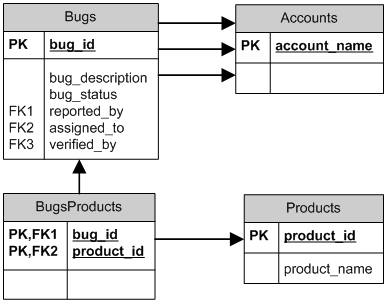

Zend_Db_AdapterZend_Db und die zugehörigen Klassen bieten eine einfache SQL Schnittstelle für Zend Framework. Zend_Db_Adapter ist die Basisklasse zur Anbindung einer PHP Anwendung an ein RDBMS. Es gibt für jede RDBMS Marke einen eigenen Adapter. Die Zend_Db Adapter bilden eine Schnittstelle zu den Hersteller spezifischen PHP Erweiterungen und unterstützen dadurch die Entwicklung einer PHP Anwendung für verschiedene RDBMS mit geringem Aufwand. Die Schnittstellen der Adapterklasse ähneln denen der » PHP Data Objects Erweiterung. Zend_Db bietet Adapterklassen für PDO Treiber der folgenden RDBMS Marken:
Zusätzlich bietet Zend_Db Adapterklassen für die folgenden RDBMS Marken, welche eigene PHP Datenbank Erweiterungen nutzen:
Anbindung einer Datenbank mit einem AdapterDieser Abschnitt beschreibt wie eine Instanz eines Datenbankadapters erzeugt wird. Dies entspricht der Erzeugung einer Verbindung an ein RDBMS Server in einer PHP Anwendung. Nutzung des Zend_Db Adapter KonstruktorsMan kann eine Instanz eines Adapters erzeugen, indem man den Konstruktor verwendet. Ein Adapter Konstruktur benötigt ein Argument, wobei es sich um ein Array mit Parametern für die Verbindung handelt. Example #1 Nutzung eines Adapter Konstruktors
Nutzung der Zend_Db FactoryAls Alternative zur direkten Nutzung des Konstruktors kann man auch eine Instanz des Adapters erzeugen indem man die statische Methode Zend_Db::factory() nutzt. Diese Methode lädt die Adapterklasse dynamisch bei Aufruf unter Nutzung von Zend_Loader::loadClass(). Das erste Argument ist ein String der den Namen der Adapterklasse enthält. Zum Beispiel entspricht der String 'Pdo_Mysql' der Klasse Zend_Db_Adapter_Pdo_Mysql. Das zweite Argument ist das gleiche Array von Parametern wie bei der Verwendung des Adapter Konstruktors. Example #2 Nutzung der Adapter factory() Methode
Wenn eine eigene Klasse geschrieben wird, die Zend_Db_Adapter_Abstract erweitert aber nicht mit dem Präfix "Zend_Db_Adapter" beginnt, kann die factory() Methode verwendet werden um den Adapter zu Laden wenn der führende Teil der Adapter Klasse mit dem 'adapterNamespace' Schlüssel im Parameter Array spezifiziert wird. Example #3 Die factory Methode für eine eigene Adapter Klasse verwenden
Zend_Config mit Zend_Db_Factory verwendenOptional kann jedes Argument der factory() Methode als Objekt des Typs Zend_Config spezifiziert werden. Wenn das erste Argument ein Config Objekt ist, wird erwartet das es eine Eigenschaft enthält die adapter heißt und einen String enthält der nach dem Adapter Basis Klassen Namen benannt ist. Optional kann das Objekt eine Eigenschaft genannt params enthalten, mit Subeigenschaften korrespondierend zu den Parameter Namen des Adapters. Das wird nur verwendet wenn das zweite Argument für die factory() Methode nicht angegeben wird. Example #4 Verwenden der Factory Methode des Adapters mit einem Zend_Config Objekt Im Beispiel anbei wird ein Zend_Config Objekt von einem Array erstellt. Die Daten können auch aus einer externen Datei geladen werden indem Klassen wie zum Beispiel Zend_Config_Ini oder Zend_Config_Xml verwendet werden. Das zweite Argument der factory() Methode kann ein assoziatives Array sein das Einträge enthält die den Parameters des Adapters entsprechen. Dieses Argument ist optional. Wenn das erste Argument vom Typ Zend_Config ist, wird angenommen das es alle Parameter enthält, und das zweite Argument wird ignoriert. Adapter ParameterDie folgende Liste erklärt die gemeinsamen Parameter die von Zend_Db Adapterklassen erkannt werden.
Example #5 Übergeben der case-folding Option an die factory Diese Option kann über die Konstante Zend_Db::CASE_FOLDING angegeben werden. Sie entspricht dem ATTR_CASE Attribut in PDO und IBM DB2 Datenbanktreibern und stellt die Schreibweise von String Schlüsseln in Abfrageergebnissen ein. Die Option kann den Wert Zend_Db::CASE_NATURAL (der Standard), Zend_Db::CASE_UPPER oder Zend_Db::CASE_LOWER annehmen. Example #6 Übergeben der auto-quoting Option an die factory Diese Option kann über die Konstante Zend_Db::AUTO_QUOTE_IDENTIFIERS angegeben werden. Wenn der Wert TRUE (der Standard) ist, werden Bezeichner wie Tabellennamen, Spaltennamen und auch Aliase in jeder SQL Syntax die vom Adapter Objekt generiert wurde begrenzt. Dies macht es einfach Bezeichner zu verwenden, die SQL Schlüsselwörter oder spezielle Zeichen enthalten. Wenn der Wert FALSE ist, werden Bezeichner nicht automatisch begrenzt. Wenn Bezeichner begrenzt werden müssen, so kann dies über die quoteIdentifier() Methode von Hand getan werden. Example #7 Übergeben von PDO Treiber Optionen an die factory
Example #8 Übergabe einer Serialisierungs Option an die Factory Verwalten von Lazy ConnectionsDie Erzeugung einer Instanz der Adapterklasse stellt nicht gleichzeitig eine Verbindung zum RDBMS her. Der Adapter speichert die Verbindungsparameter und stellt die tatsächliche Verbindung bei Bedarf her, wenn die erste Anfrage ausgeführt wird. Dies stellt sicher, dass die Erzeugung eines Adapterobjekts schnell und sparsam ist. Dadurch kann auch dann eine Instanz eines Adapters erzeugt werden, wenn nicht zwingend eine Datenbankanfrage für die aktuell gelieferte Darstellung der Anwendung benötigt wird. Wenn der Adapter zwingend eine Verbindung zum RDBMS herstellen soll, kann die getConnection() Methode verwendet werden. Diese liefert ein Objekt der Verbindung, welches eine Verbindung entsprechend der verwendeten PHP Erweiterung repräsentiert. Wenn zum Beispiel irgendeine der PDO Adapterklassen verwendet wird, dann liefert getConnection() das PDO Object, nachdem es als eine live Verbindung zu der entsprechenden Datenbank initialisiert wurde. Es kann nützlich sein eine Verbindung zu erzwingen um jegliche Exceptions abzufangen, die als Resultat falscher Konto Berechtigungen oder einem anderen Fehler bei der Verbindung zum RDBMS auftreten. Diese Exceptions treten nicht auf, bis die tatsächliche Verbindung hergestellt ist, daher kann es den Anwendungs-Code vereinfachen, wenn diese Exceptions an einer Stelle bearbeitet werden, und nicht erst bei der ersten Anfrage. Zusätzlich kann ein Adapter serialisiert werden um Ihn zu speichern, zum Beispiel in einer Session Variable. Das kann sehr nütlich sein, nicht nur für den Adapter selbst, sondern auch für andere Objekte die Ihn verwenden, wie ein Zend_Db_Select Objekt. Standardmäßig, ist es Adaptern erlaubt serialisiert zu werden. Wenn man das nicht will, sollte man die Zend_Db::ALLOW_SERIALIZATION Option mit FALSE übergeben, wie im Beispiel anbei gezeigt. Um das Prinzip von Lazy Connections zu erlauben, wird der Adapter sich selbst nicht wiederverbinden wenn er deserialisiert wird. Man muß getConnection() selbst aufrufen. Mann kann den Adapter dazu bringen sich automatisch wieder zu verbinden indem Zend_Db::AUTO_RECONNECT_ON_UNSERIALIZE als Option mit TRUE zum Adapter übergeben wird. Example #9 Umgang mit Verbindungs Exceptions
Beispiel DatenbankIn der Dokumentation für die Zend_Db Klassen verwenden wir einige einfache Tabellen um die Verwendung der Klassen und Methoden zu erläutern. Diese Beispieltabellen können Informationen für das Bugtracking in einem Softwareprojekt speichern. Die Datenbank enthält vier Tabellen:
Der folgende SQL Daten Definitions Sprache Pseudocode beschreibt die Tabellen in dieser Beispieldatenbank. Diese Beispieltabellen werden intensiv bei den automatisierten Unit-Tests für Zend_Db verwendet.
Weiterhin zu beachten ist, dass die 'bugs' Tabelle mehrere Foreign-Key References zu der 'accounts' Tabelle enthält. Jeder dieser Foreign-Keys kann auf eine andere Zeile für einen angegebenen Bug in der 'accounts' Tabelle verweisen. Das unten stehende Diagramm illustriert das physische Datenmodell der Beispieldatenbank.
 Lesen von AbfrageergebnissenDieser Abschnitt beschreibt Methoden der Adapterklasse mit denen SELECT Abfragen ausgeführt werden können um Abfrageergebnisse abzurufen. Holen des kompletten ErgebnisssatzesMan kann eine SQL SELECT Anfrage ausführen und alle Ergebnisse auf einmal mit der fetchAll() Methode abrufen. Das erste Argument dieser Methode ist ein String der die SELECT Anweisung enthält. Als Alternative kann das erste Argument auch ein Objekt der Zend_Db_Select Klasse sein. Der Adapter konvertiert dieses automatisch in einen String der die SELECT Anweisung repräsentiert. Das zweite Argument von fetchAll() ist ein Array von Werten die Parameterplatzhalter in der SQL Anweisung ersetzen. Example #10 Nutzung von fetchAll()
Ändern des Fetch ModusStandardmäßig gibt fetchAll() ein Array von Zeilen, jede als assoziatives Array, zurück. Die Schlüssel von diesem assoziativem Array entsprechen den Spalten oder Spaltenaliasen wie sie in der SELECT Anfrage benannt sind. Man kann einen anderen Stil für das Holen der Ergebnisse mit der setFetchMode() Methode angeben. Die unterstützten Modi werden mit folgenden Konstanten identifiziert:
Example #11 Nutzung von setFetchMode()
Holen eines Ergbnisssatzes als assoziatives ArrayDie fetchAssoc() Methode gibt Daten in einem Array von assoziativen Array zurück, egal welcher Wert für den fetch-Modus gesetzt wurde, indem die erste Spalte als Array Index verwendet wird. Example #12 Nutzung von fetchAssoc()
Holen einer einzelnen Spalte eines ErgebnisssatzesDie fetchCol() Methode gibt Daten in einem Array von Werten zurück, egal welcher Wert für den fetch-Modus gesetzt wurde. Sie gibt nur die erste Spalte der Anfrage zurück. Alle weiteren Spalten der Anfrage werden verworfen. Wenn eine andere Spalte als die Erste benötigt wird sollte dieser Abschnitt beachtet werden. Example #13 Nutzung von fetchCol()
Holen von Schlüssel-Wert Paaren eines ErgebnisssatzesDie fetchPairs() Methode gibt Daten in einem Array von Schlüssel-Wert Paaren zurück, einem assoziativen Array mit einem einzelnen Eintrag pro Zeile. Der Schlüssel dieses assoziativen Arrays wird von der ersten Spalte des SELECT Ergebnisses genommen. Der Wert wird aus der zweiten Spalte des SELECT Ergebnisses genommen. Alle weiteren Spalten des Ergebnisses werden verworfen. Die SELECT Anfrage sollte so gestaltet sein, dass die erste Spalte nur eindeutige Werte liefert. Wenn doppelte Werte in der ersten Spalte vorkommen, werden entsprechende Einträge in dem assoziativen Array überschrieben. Example #14 Nutzung von fetchPairs()
Holen einer einzelnen Zeile eines ErgebnisssatzesDie fetchRow() Methode gibt Daten entsprechend dem fetch-Modus zurück, jedoch nur die erste Zeile des Ergebnisssatzes. Example #15 Nutzung von fetchRow()
Holen eines einzelnen Scalars aus einem ErgebnisssatzDie fetchOne() Methode ist wie eine Kombination von fetchRow() mit fetchCol(), gibt also nur die erste Zeile des Ergebnisssatze zurück, und von dieser auch nur den Wert der ersten Spalte. Daher wird nur ein einziger scalarer Wert zurückgegeben, kein Array und auch kein Objekt. Example #16 Nutzung von fetchOne()
Schreiben von Änderungen in die DatenbankDie Adapterklasse kann verwendet werden um neue Daten in die Datenbank zu schreiben oder bestehende Daten in der Datenbank zu ändern. Dieser Abschnitt beschreibt Methoden für diese Operationen. Einfügen von DatenNeue Zeilen können in die Datenbank mit der insert() Methode eingefügt werden. Das erste Argument ist ein String der die Tabelle benennt, und das zweite Argument ist ein assoziatives Array das den Spaltennamen Datenwerte zuordnet. Example #17 Einfügen in eine Tabelle
Spalten die nicht in dem Array definiert sind, werden nicht an die Datenbank übergeben. Daher folgen sie den selben Regeln denen eine SQL INSERT Anweisung folgt: wenn die Spalte eine DEFAULT Klausel hat, so bekommt die Spalte der neuen Zeile diesen Wert. Andernfalls behält sie den Status NULL. Standardmäßig werden die Daten in dem Array mit Parametern eingefügt. Dies reduziert das Risiko einiger Typen von Sicherheitsproblemen. Die Werte in dem Array müssen daher nicht escaped oder quotiert übergeben werden. Einige Werte in dem Array könnten als SQL Expressions benötigt werden, in diesem Fall dürfen sie nicht in Anführungszeichen stehen. Standardmäßig werden alle übergebenen String-Werte als String-literale behandelt. Um anzugeben das ein Wert eine SQL Expression ist, und daher nicht quotiert werden soll, muss der Wert als ein Objekt des Typs Zend_Db_Expr übergeben werden, und nicht als einfacher String. Example #18 Einfügen von Expressions in eine Tabelle
Abfragen von generierten WertenEinige RDBMS Marken unterstützen Auto-Incrementierung von Primärschlüsseln. Eine Tabelle die so definiert ist generiert automatisch einen Primärschlüsselwert während des INSERT's einer neuen Zeile. Der Rückgabewert der insert() Methode ist nicht die letzte eingefügte ID, weil die Tabelle keine Auto-Increment Spalte haben könnte. Statt dessen ist der Rückgabewert die Anzahl der betroffenen Zeilen (normalerweise 1). Wenn die Tabelle mit einem Auto-Increment Primärschlüssel definiert ist, kann die lastInsertId() Methode nach dem INSERT aufgerufen werden. Diese Methode gibt den letzten generierten Wertim Rahmen der aktuellen Datenbankverbindung zurück. Example #19 Nutzung von lastInsertId() für einen Auto-Increment Schlüssel
Einige RDBMS Marken unterstützen ein Sequenz-Objekt, welches eindeutige Werte generiert, die als Primärschlüsselwerte dienen. Um Sequenzen zu unterstützen, akzeptiert die lastInsertId() Method zwei optionale String Argumente. Diese Argumente benennen die Tabelle und die Spalte, in der Annahme das die Konvention beachtet wurde, dass eine Sequenz mit der Tabelle und der Spalte benannt wurde, für die sie Werte generiert plus dem Anhang "_seq". Dies basiert auf der Konvention die von PostgreSQL verwendet wird, wenn Sequenzen für SERIAL Spalten benannt werden. Zum Beispiel würde eine Tabelle "bugs" mit der Primärschlüsselspalte "bug_id" eine Sequenz als "bugs_bug_id_seq" benennen. Example #20 Nutzung von lastInsertId() für eine Sequenz
Wenn der Name des Squenz-Objekts nicht dieser Konvention folgt muss die lastSequenceId() Methode an Stelle verwendet werden. Diese Methode benötigt ein String Argument, welches die Sequenz wörtlich benennt. Example #21 Nutzung von lastSequenceId()
Bei RDBMS Marken die keine Sequenzen unterstützen, dazu gehören MySQL, Microsoft SQL Server und SQLite, werden die Argumente an die lastInsertId() Methode ignoriert, und der zurück gegebene Wert ist der zuletzt für eirgendeine Tabelle während einer INSERT Operation generierte Wert innerhalb der aktuellen Verbindung. Für diese RDBMS Marken gibt die lastSequenceId() Methode immer NULL zurück.
Aktualisieren von DatenZeilen in der Datenbank können mit der update() Methode eines Adapters aktualisiert werden. Diese Methode benötigt drei Argumente: Das Erste ist der Name der Tabelle und das Zweite ist ein assoziatives Array das den zu Ändernden Spalten neue Werte zuordnet. Die Werte des Datenarrays werden als String Literale behandelt. Beachte diesen Abschnitt für Informationen zur Nutzung von SQL Expressions in dem Datenarray. Das dritte Argument ist ein String der aus einer SQL Expression besteht, die genutzt wird um Kriterien für die Auswahl der zu ändernden Zeilen zu bestimmen. Die Werte und Bezeichner in diesem Argument werden nicht escaped oder quotiert. An dieser Stelle muss darauf geachtet werden das sichergestellt ist, das dynamischer Inhalt sicher in diesen String eingefügt wird. In diesem Abschnitt sind Methoden beschrieben die dabei helfen können. Der Rückgabewert ist die Anzahl der Betroffenen Zeilen der UPDATE Operation. Example #22 Aktualisieren von Zeilen
Wenn das dritte Argument ausgelassen wird, werden alle Zeilen der Tabelle mit den Werten des Datenarrays aktualisiert. Wenn ein Array mit Strings als drittes Argument übergeben wird, werden diese Strings als eine Expression von Ausdrücken, getrennt von AND Operatoren, zusammengefügt. Wenn man ein Array von Arrays als drittes Argument anbietet, werden die Werte automatisch in die Schlüssel eingefügt. Diese werden dann zusammen zu Ausdrücken verbunden, getrennt von AND Operatoren. Example #23 Aktualisieren von Zeilen unter Nutzung eines Arrays von Expressions
Example #24 Zeilen aktualisieren durch Verwendung von einem Array von Arrays
Löschen von DatenDaten können aus einer Datenbanktabelle mit der delete() Methode gelöscht werden. Diese Methode benötigt zwei Argumente: Das erste ist ein String der die Tabelle benennt. Das zweite Argument ist ein String der aus einer SQL Expression besteht, welche Kriterien für die zu löschenden Zeilen enthält. Die Werte und Bezeichner in diesem Argument werden nicht escaped quotiert. An dieser Stelle muss darauf geachtet werden das sichergestellt ist, das dynamischer Inhalt sicher in diesen String eingefügt wird. In diesem Abschnitt sind Methoden beschrieben die dabei helfen können. Der Rückgabewert ist die Anzahl der Betroffenen Zeilen der DELETE Operation. Example #25 Löschen von Zeilen
Wenn das zweite Argument ausgelassen wird, werden alle Zeilen der Tabelle gelöscht. Wenn ein Array mit Strings als zweites Argument übergeben wird, werden diese Strings als eine Expression von Ausdrücken, getrennt von AND Operatoren, zusammengefügt. Wenn man ein Array von Arrays als zweites Argument übergibt, werden die Werte automatisch in die Schlüssel eingefügt. Diese werden dann zusammen zu Ausdrücken verbunden, getrennt durch AND Operatoren. Quotierung von Werten und BezeichnernBeim Erzeugen von SQL Anfragen ist es häufig nötig PHP Variablen in die SQL Expression einzufügen. Dies ist riskant, weil der Wert eines PHP Strings bestimmte Zeichen enthalten kann, wie das Anführungszeichen, was zu ungültiger SQL Syntax führen kann. Zum Beispiel, zu beachten ist die ungerade Anzahl der Anführungszeichen in der folgenden Anfrage:
Noch schlimmer ist das Risiko, dass solche Code-Fehler von einer Person absichtlich ausgenutzt werden um die Funktion der Webanwendung zu manipulieren. Wenn der Wert einer PHP Variablen über die Nutzung von HTTP Parametern oder eines anderen Mechanismus gesetzt werden kann, könnte eine Person die SQL Anfragen nutzen um Dinge zu tun, wozu sie nicht gedacht sind, wie Daten ausgeben, wozu die Person keine Zugangsberechtigung hat. Dies ist eine ernst zu nehmende und weit verbreitete Technik um die Sicherheit einer Anwendung zu verletzen, bekannt unter dem Namen "SQL Injection" (siehe » http://en.wikipedia.org/wiki/SQL_Injection). Die Zend_Db Adapterklassen bieten bequeme Methoden, die helfen die Verletzbarkeit durch SQL Injection Angriffe im PHP Code zu reduzieren. Die Lösung ist bestimmte Zeichen, wie Anführungszeichen, in PHP Werten zu ersetzen bevor sie in SQL Strings eingefügt werden. Dies schützt sowohl vor versehentlicher als auch vor absichtlicher Manipulation von SQL Strings durch PHP Variablen, die spezielle Zeichen enthalten. Nutzung von quote()Die quote() Methode benötigt ein Argument, einen skalaren String Wert. Sie gibt den Wert mit ersetzten speziellen Zeichen, passend zu dem eingesetzten RDBMS, und umgeben von Stringwertbegrenzern zurück. Der Standard SQL Stringwertbegrenzer ist das einfache Anführungszeichen ('). Example #26 Nutzung von quote() Zu beachten ist, dass der Rückgabewert von quote() die Stringwertbegrenzer enthält. Dies ist ein Unterschied zu anderen Methoden die spezielle Zeichen ersetzen, aber keine Stringwertbegrenzer hinzufügen, wie z.B. » mysql_real_escape_string(). Es kann notwendig sein Werte in Anführungszeichen zu setzen oder nicht je nach dem Kontext des SQL Datentyps in dem diese verwendet werden. Zum Beispiel darf, in einigen RDBMS Typen, ein Integer Wert nicht wie in String in Anführungszeichen gesetzt werden, wenn dieser mit einer Integer-Typ Spalte oder einem Ausdruck verglichen wird. Anders gesagt ist das folgende in einigen SQL Implementationen ein Fehler, wenn angenommen wird dass intColumn einen SQL Datentyp von INTEGER besitzt
Es kann das optionale zweite Argument der quote() Methode verwendet werden um die Verwendung von Anführungszeichen selektiv für den spezifizierten SQL Datentyp auszuwählen. Example #27 Verwenden von quote() mit einem SQL Typ
Jede Zend_Db_Adapter Klasse hat den Namen des nummerischen SQL Datentyps für die respektive Marke von RDBMS codiert. Man kann genauso die Konstanten Zend_Db::INT_TYPE, Zend_Db::BIGINT_TYPE, und Zend_Db::FLOAT_TYPE verwenden um Code in einem mehr RDBMS-unabhängigen Weg zu schreiben. Zend_Db_Table definiert SQL Typen zu quote() automatisch wenn SQL Abfragen erstellt werden die einer Tabellen Schlüssel Spalte entsprechen. Nutzung von quoteInto()Die typischste Anwendung von Quotierung ist das Einfügen von PHP Variablen in eine SQL Expression oder Anweisung. Die quoteInto() Methode kann verwendet werden um dies in einem Schritt zu erledigen. Die Methode benötigt zwei Argumente: Das erste Argument ist ein String der ein Platzhaltersymbol (?) enthält, und das zweite Argument ist ein Wert oder eine PHP Variable die den Platzhalter ersetzen soll. Das Platzhaltersymbol ist das gleiche Symbol wie es von vielen RDBMS Marken für Lage betreffende Parameter verwendet wird, aber die quoteInto() Methode bildet nur Abfrageparameter nach. Die Methode fügt den Wert in den String ein, ersetzt dabei spezielle Zeichen und fügt Stringwertbegrenzer ein. Echte Abfrageparameter sorgen für eine Trennung von SQL String und Parametern wenn die Anweisung vom RDBMS Server verarbeitet wird. Example #28 Nutzung von quoteInto()
Man kann den optionalen dritten Parameter von quoteInto() verwenden um den SQL Datentyp zu spezifizieren. Nummerische Datentypen werden nicht in Anführungszeichen gesetzt und andere Typen werden in Anführungszeichen gesetzt. Example #29 Verwenden von quoteInto() mit einem SQL Typ
Nutzung von quoteIdentifier()Werte könnten nicht der einzige Teil der SQL Syntax sein, der Variabel sein soll. Wenn PHP Variablen genutzt werden um Tabellen, Spalten oder andere Bezeichner in den SQL Anweisungen zu benennen, könnte es nötig sein das diese Strings ebenfalls quotiert werden müssen. Standardmäßig haben SQL Bezeichner Syntaxregeln wie PHP und die meißten anderen Programmiersprachen. Zum Beispiel dürfen Bezeichner keine Leerzeichen, bestimmte Punktierung, spezielle Zeichen oder Internationale Zeichen enthalten. Außerdem sind bestimmte Wörter für die SQL Syntax reserviert und dürfen nicht als Bezeichner verwendet werden. Dennoch hat SQL ein Feature mit Namen delimited identifiers (begrenzte Bezeichner), welches eine größere Auswahl bei der Schreibweise von Bezeichnern erlaubt. Wenn ein SQL Bezeichner mit dem richtigen Typ von´ Quotierung eingeschlossen ist, können Schreibweisen für die Bezeichner verwendet werden, die ohne der Quotierung ungültig wären. Begrenzte Bezeichner können Leerzeichen, Punktierung oder internationale Zeichen enthalten. Desweiteren dürfen auch von der SQL Syntax reservierte Wörter verwendet werden, wenn sie von Bezeichner Begrenzungszeichen eingeschlossen sind. Die quoteIdentifier() Methode funktioniert wie quote(), aber sie wendet die Bezeichner Begrenzungszeichen entsprechend dem verwendeten Adapter an. Zum Beispiel nutzt Standard SQL doppelte Anführungszeichen (") zum begrenzen von Bezeichnern und die meisten der RDBMS Marken nutzen ebenfalls dieses Symbol. MySQL hingegen benutzt back-quotes (`) als Standardzeichen. Die quoteIdentifier() Methode ersetzt außerdem spezielle Zeichen im String Argument. Example #30 Nutzung von quoteIdentifier()
SQL begrenzte Bezeichner beachten die Groß- und Kleinschreibung, im Gegensatz zu nicht quotierten Bezeichnern. Daher muss, bei Verwendung von begrenztern Bezeichnern, die Schreibung der Bezeichner genau der Schreibung der Bezeichner im Tabellenschema entsprechen. Einschließlich der Groß- und Kleinschreibung. In den meisten Fällen wo SQL innerhalb der Zend_Db Klassen generiert wird, werden standardmäßig alle Bezeichner automatisch begrenzt. Dieses Verhalten kann mit der Option Zend_Db::AUTO_QUOTE_IDENTIFIERS geändert werden. Dies muss beim Instanziieren des Adapters wie in diesem Beispiel angegeben werden. Kontrollieren von Datenbank TransaktionenDatenbanken definieren Transaktionen als logische Einheiten von Arbeit, die als einzelne Änderung übergeben oder rückgängig gemacht werden kann, selbst wenn sie auf verschiedenen Tabellen operiert. Alle Anfragen an einen Datenbank werden im Kontext einer Transaktion ausgeführt, selbst wenn der Datenbanktreiber sie implizit Verwaltet. Es wird auto-commit Modus genannt, wenn der Datenbanktreiber eine Transaktion für jede Anweisung erzeugt, und diese direkt nach dem Ausführen des SQL Statements übergibt. Standardmäßig operieren alle Zend_Db Adapterklassen im auto-commit Modus. Alternativ kann der Begin und das Ergebnis einer Transaktion selbst spezifiziert werden, und damit kann kontrolliert werden wieviele SQL Anfragen in einer Gruppe enthalten sind, die entweder übergeben oder rückgängig gemacht wird, als eine einzelne Operation. Um eine Transaktion zu initiieren wird die beginTransaction() Methode verwendet. Anschließend folgende SQL Anweisungen werden im Kontext der selben Transaktion ausgeführt bis sie explizit aufgelöst wird. Um eine Transaktion aufzulösen wird entweder die commit() oder die rollBack() Methode verwendet. Die commit() Methode markiert die Änderungen die während der Transaktionen durchgeführt wurden als übergeben, was bedeutet das die Effekte dieser Änderungen in anderen Transaktionen angezeigt werden. Die rollBack() Methode tut das Gegenteil: sie verwirft die Änderungen die während der Transaktionen durchgeführt wurden. Die Änderungen werden gewissermaßen ungeschehen gemacht, der Status der Daten ändert sich zurück auf jenen wie sie vor Beginn der Transaktion waren. Allerdings hat das rückgängig machen keinen Einfluss auf Änderungen die von anderen, gleichzeitig laufenden Transaktionen verursacht wurden. Nach dem Auflösen der Transaktion befindet sich der Zend_Db_Adapter wieder im auto-commit Modus, bis beginTransaction() wieder aufgerufen wird. Example #31 Verwalten einer Transaktion um Konsistenz sicher zu stellen
Auflistung und Beschreibung von TabellenDie listTables() Methode gibt ein Array von Strings zurück, mit den Namen aller Tabellen in der aktuellen Datenbank. Die describeTable() Methode gibt ein assoziatives Array von MetaDaten über die Tabelle zurück. Das erste Argument dieser Methode ist ein String der den Namen der Tabelle enthält. Das zweite Argument ist optional und benennt das Schema in dem die Tabelle besteht. Die Schlüssel des assoziativen Arrays sind die Spaltennamen der Tabelle. Der zugehörige Wert jeder Spalte ist ebenfalls ein assoziatives Array mit den folgenden Schlüsseln und Werten:
Wenn keine Tabelle mit dem Tabellennamen und dem optional angegebenen Schemanamen existiert, gibt describeTable() ein leeres Array zurück. Schließen einer VerbindungNormalerweise ist es nicht nötig eine Datenbankverbindung zu schließen. PHP räumt automatisch alle Ressourcen am Ende einer Anfrage auf und die Datenbankerweiterungen sind so designed das sie Verbindungen beenden wenn Referenzen zu ihren Objekten aufgeräumt werden. Trotzdem könnte es sinnvoll sein, wenn ein lang andauerndes PHP Script verwendet wird, das viele Datenbankverbindungen hat, diese zu schließen um zu vermeiden das die Kapazität des RDBMS Servers überschritten wird. Die closeConnection() Methode der Adapterklasse kann verwendet werden um die zugrundeliegende Datenbankverbindung explizit zu schließen. Seit Release 1.7.2, kann man prüfen ob man mit der isConnected() prüfen ob man aktuell mit dem RDBMS Server verbunden ist. Das bedeutet das eine Verbindungs Ressource initialisiert und nicht geschlossen wurde. Diese Funktion ist aktuell nicht in der Lage zu prüfen ob zum Beispiel die Server Seite die Verbindung geschlossen hat. Das wird intern verwendet um die Verbindung zu schließen. Das erlaubt es die Verbindung ohne Fehler mehrere Male zu schließen. Das war bereits vor 1.7.2 der Fall für PDO Adapter, aber nicht für die anderen. Example #32 Schließen einer Datenbankverbindung
Ausführen anderer Datenbank AnweisungenEs könnte Fälle geben in denen direkter Zugriff auf das Verbindungsobjekt benötigt wird, wie es von der PHP Erweiterung bereitgestellt wird. Einige der Erweiterungen könnten Features anbieten, welche nicht von Methoden der Zend_Db_Adapter_Abstract Klasse auftauchen.. Zum Beispiel werden alle SQL Anweisungen von Zend_Db vorbereitet und dann ausgeführt. Trotzdem gibt es einige Features welche nicht kompatibel mit vorbereiteten Anweisungen sind. DDL Anweisungen wie CREATE und ALTER können in MySQL nicht vorbereitet werden. Auch können SQL Anweisungen keinen Nutzen aus dem » MySQL Query Cache ziehen, bei einer geringeren MySQL Version als 5.1.17. Die meisten PHP Datenbankerweiterungen bieten eine Methode um SQL Anweisung auszuführen ohne diese vorzubereiten. Zum Beispiel bietet PDO die Methode exec(). Das Verbindungsobjekt der PHP Erweiterung kann kann mit der Methode getConnection() direkt verwendet werden. Example #34 Ausführen eines nicht-prepared Statements mit einem PDO Adapter
So ähnlich können auch andere Methoden oder Eigenschaften der speziellen PHP Datenbankerweiterung genutzt werden. Zu beachten dabei ist jedoch, dass dadurch möglicherweise die Anwendung auf das angegebene Interface, bereitgestellt von einer Erweiterung für ein bestimmtes RDBMS, beschränkt wird. In zukünftigen Versionen von Zend_Db werden Möglichkeiten gegeben sein, um Methoden Startpunkte hinzuzufügen, für Funktionalitäten die den unterstützten PHP Datenbankerweiterungen gemein sind. Dies wird die Rückwärtskompatibilität nicht beeinträchtigen. Erhalten der Server VersionSeit Release 1.7.2 kann man die Version des Servers in einem PHP artigen Stil erhalten damit man es mit version_compare() verwenden kann. Wenn die Information nicht vorhanden ist erhält man NULL zurück. Example #35 Prüfen der Server Version bevor eine Abfrage gestartet wird
Anmerkungen zu bestimmten AdapternDieser Abschnitt beschreibt Unterschiede zwischen den verschieden Adapterklassen auf die man achtgeben sollte. Microsoft SQL Server
IBM DB2
MySQLi
Oracle
PDO Adapter für IBM DB2 und für Informix Dynamic Server (IDS)
PDO Microsoft SQL Server
PDO MySQL
PDO Oracle
PDO PostgreSQL
PDO SQLite
Firebird (Interbase)
|